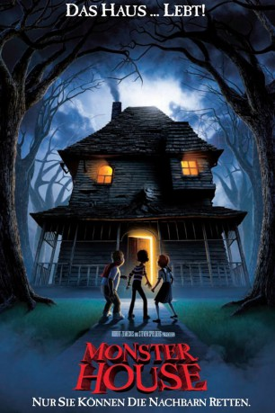

 
 IMDB-Wertung: 6.6 / 10
IMDB-Wertung: 6.6 / 10  Metascore:
Metascore: 
Jeden Tag spioniert D.J. seinen Nachbarn, den alten Nebbercracker, aus, der immer, sobald ein Nachbarskind auch nur einen Fuß auf seinen Rasen setzt, aus dem Haus gestürmt kommt, es anschreit und ihm sein Spielzeug wegnimmt.Als beim Basketball spielen mit seinem Freund Chowder der Ball auf das gegenüberliegende Grundstück rollt, fasst D.J. seinen ganzen Mut zusammen und will ihn wiederholen. Doch auch dieses Mal kommt der Mann aus dem Haus, fällt beim Fluchen und Schreien aber tot um.Von nun an scheint das Haus ein Eigenleben zu entwickeln. D.J. beobachtet, wie Gegenstände, Spielzeug und sogar ein Hund vom Haus einfach aufgefressen werden. Als seine Eltern über Nacht wegfahren, schleicht er sich mit Chowder und einer weiteren Freundin, Jenny, zum Haus, um den Grund für die mysteriösen Ereignisse zu finden...
Jahr: 2006
Dauer: 91 Minuten
FSK: 6
Land: USA Studio: Columbia PicturesTonspuren: DTS - ,
Untertitel:
Auflösung: 720p (1280x536) Größe: 3512 MB
Genre: Animation/Trick, Abenteuer, Komödie, Familie, Fantasy, Mystery
Regisseur: Gil Kenan
Drehbuch: Dan Harmon, Rob Schrab, Pamela Pettler, Dan Harmon, Rob Schrab
Soundtrack: Douglas Pipes
Darsteller:
 Steve Buscemi als Nebbercracker
Steve Buscemi als Nebbercracker Catherine O'Hara als Mom
Catherine O'Hara als Mom Fred Willard als Dad
Fred Willard als Dad Sam Lerner als Chowder
Sam Lerner als Chowder Woody Schultz als Paramedic #1
Woody Schultz als Paramedic #1 Maggie Gyllenhaal als Zee
Maggie Gyllenhaal als Zee Jason Lee als Bones
Jason Lee als Bones Spencer Locke als Jenny
Spencer Locke als Jenny Kevin James als Officer Landers
Kevin James als Officer Landers Nick Cannon als Officer Lister
Nick Cannon als Officer Lister Jon Heder als Reginald 'Skull' Skulinski
Jon Heder als Reginald 'Skull' Skulinski Kathleen Turner als Constance
Kathleen Turner als ConstanceDatei: X:\Kinder Filme (G-M)\Monster House (2006, FSK6, 1280x536) 3D.mkv seit 22.03.2015
Festplatte: Kinder-Filme+Trick
 Es gibt insgesamt 84 Filme in der Gruppe 'Kinder Filme (G-M)'
Es gibt insgesamt 84 Filme in der Gruppe 'Kinder Filme (G-M)'